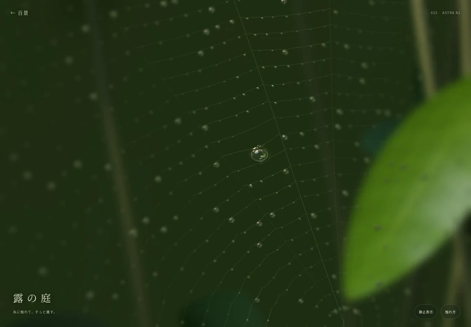
025 / ASTRA R2露の庭
糸に触れて、離す。露の重さが、小さな振動になって伝わる。
触れて見る ↗
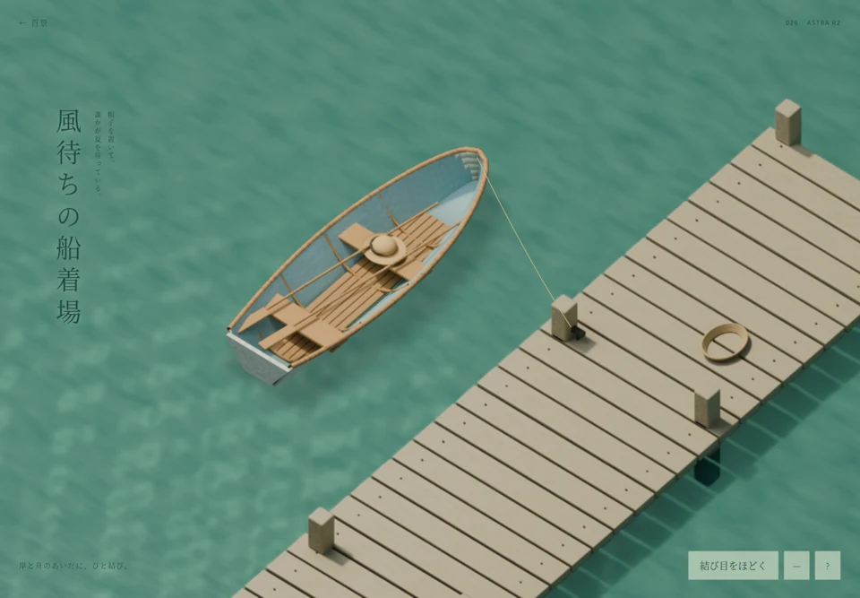
026 / ASTRA R2風待ちの船着場
ひと結びをほどく。誰も乗っていない舟が、夏の水面を離れていく。
触れて見る ↗
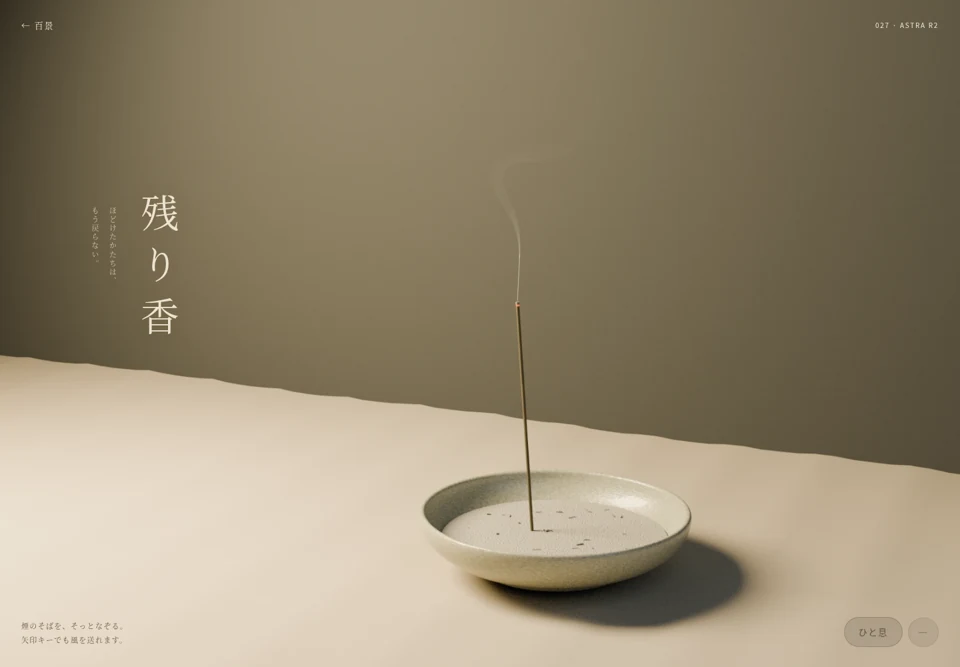
027 / ASTRA R2残り香
指先のひと息で、煙がほどける。陶と灰に残る午後の光。
触れて見る ↗
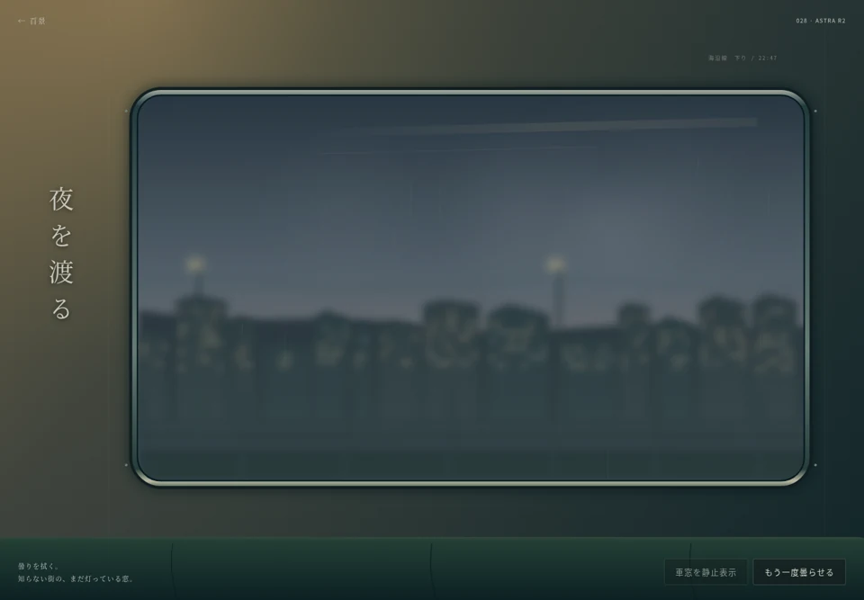
028 / ASTRA R2夜を渡る
曇った車窓を指で拭く。知らない街の灯が、その向こうを流れていく。
触れて見る ↗
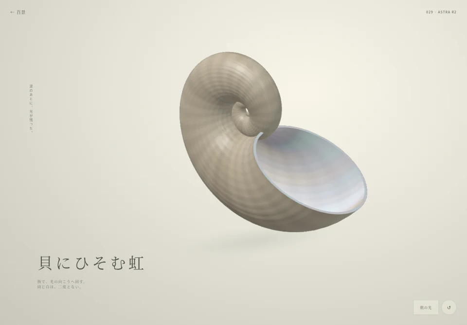
029 / ASTRA R2貝にひそむ虹
貝を回す。内側に隠れていた虹が、光の角度で現れる。
触れて見る ↗
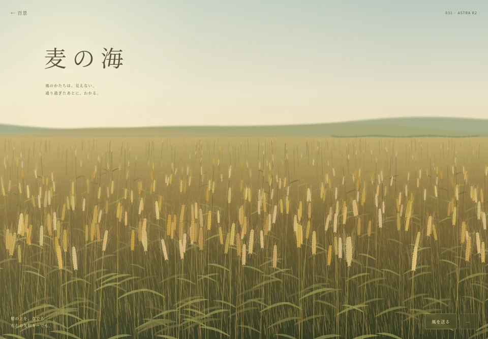
031 / ASTRA R2麦の海
穂の上をなでる。風のかたちが、遠くの麦へ伝わっていく。
触れて見る ↗
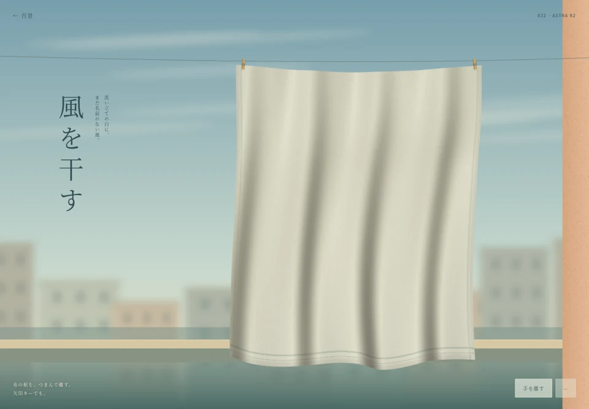
032 / ASTRA R2風を干す
白い布の裾を持ち上げる。指先からしわが生まれ、離すとほどける。
触れて見る ↗
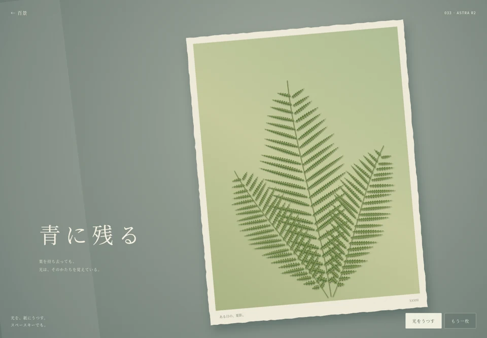
033 / ASTRA R2青に残る
陽にあてた紙から葉をめくる。触れていたところに、白い像が残る。
触れて見る ↗
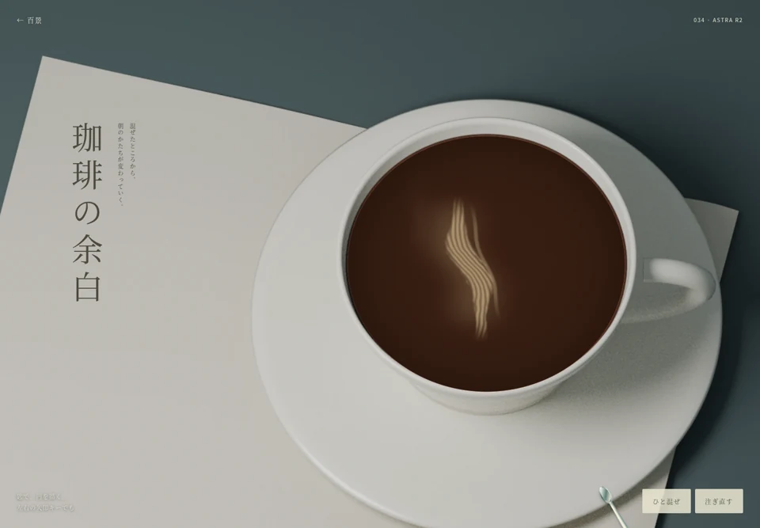
034 / ASTRA R2珈琲の余白
匙で円を描く。クリームの筋が、珈琲の上に新しいかたちをつくる。
触れて見る ↗
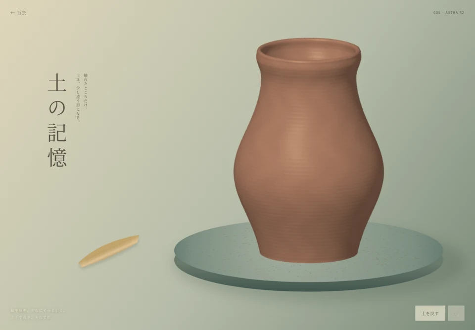
035 / ASTRA R2土の記憶
器の縁や胴をそっと引く。触れた高さだけ、土が違う形になる。
触れて見る ↗
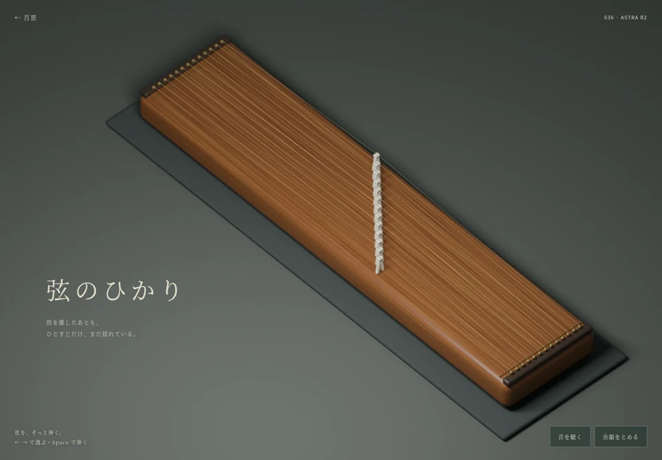
036 / ASTRA R2弦のひかり
細い弦を引いて、離す。指のあとに、ひとすじの余韻が残る。
触れて見る ↗